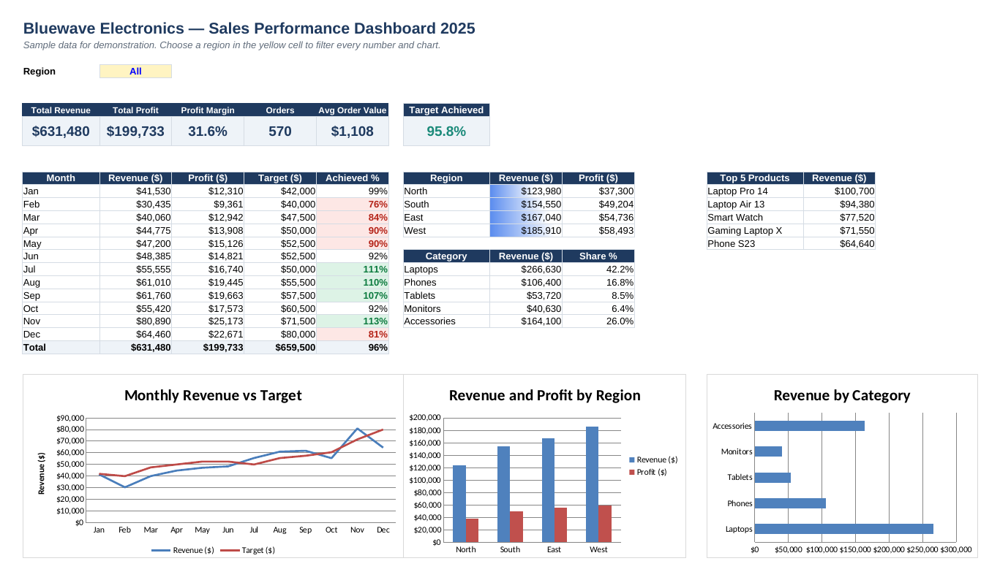

Excel · VBA · Power Query
Sales Performance Dashboard
An interactive Excel dashboard for a fictional electronics retailer. Pick a region and every KPI, table and chart updates. Includes VBA macros for PDF reports and a Power Query script that cleans raw sales exports. All company names and data are made up for demonstration.

Download
What it shows
Interactive filter
A region drop-down drives every number and chart through SUMIFS and SUMPRODUCT.
KPIs and targets
Revenue, profit, margin, orders, average order value and target achievement with colour rules.
Lookups and ranking
INDEX/MATCH from a product table and a tie-safe Top 5 products list.
Live charts
Monthly revenue vs target, revenue and profit by region, and revenue by category.
VBA automation
Refresh, export the dashboard to PDF for one or all regions, and add new orders.
Power Query cleaning
Trims, fixes capitals, types dates, removes bad rows and duplicates: 29 messy rows become 25 clean orders.
How to use
- Open the workbook and go to the Dashboard sheet.
- Choose a region in the yellow cell
C5. - For macros: save as
.xlsm, press Alt + F11, then File → Import File →SalesDashboardMacros.bas. - For Power Query: Data → Get Data → Blank Query → Advanced Editor → paste
CleanSalesData.mand set the file path.